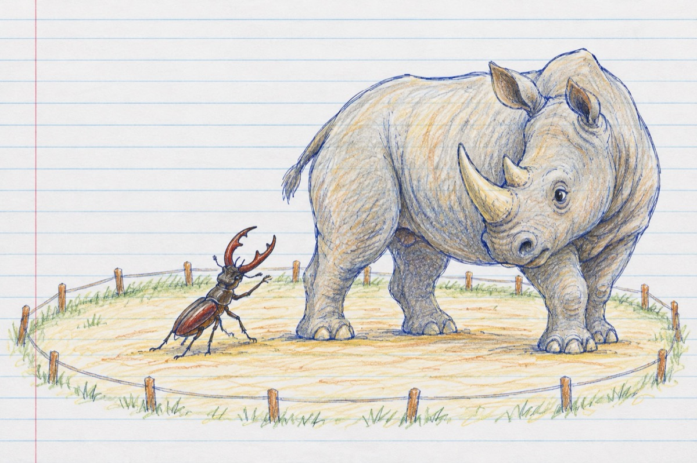

Rădașca și rinocerul
Rădașca e o insectă
Ageră, bine dotată
Pregătită pentru luptă
Cum n-ai văzut niciodată.
Pe cap poartă-un faimos clește
Corpul tot zici că-i blindat
Dacă-n zbor te nimerește
Cu greu te face scăpat!
Rinocerul, cum îl știți
Pare-un tanc pe picioare
Din față dacă-l priviți
Scutier în apărare.
Este-un animal solid
Și-n atac, și-n apărare
Are-o forță de bolid
Dar nu-i rău. precum se pare!
Ei bine, aceștia doi
În arenă s-au aflat
Să nu credeți că-i război
Ci-n cadru organizat
Rinocerul cu-al său corn
Peste tot bine blindat
Precum un gladiator
Cu rădașca s-a luptat.
Dar într-un final ca-n filme
Având. punctul slab sub coadă
Cum călcâiul lui Ahile
Rădașca ca o iscoadă
A învins prin istețime!..
Vasile Groza